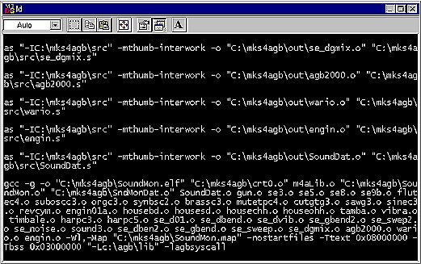
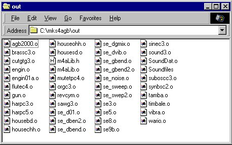
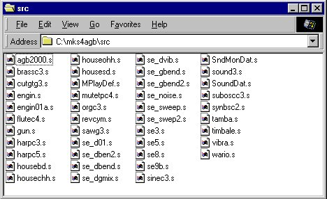
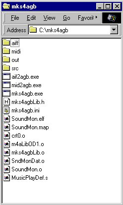

| Once the mks4agb.ini settings
have been completed, the only thing left is running mks4agb.exe. Please double click on mks4agb.exe and run it. |

Figure: The mks4agb.exe Run Screen
| If there are no errors, the window will automatically close when the process is
finished. If there are errors, some sort of message will be displayed and the process will stop. If you have followed the procedure in this explanation, there should be no errors. However, if you get an error, please check to see if there are any misspelled terms in the mks4agb.ini file and make certain that the Work Directory is in the path. |
| Files output to the "out" Directory m4aLib.h m4aLib.o SoundDat.o Soundfiles {songname}.o {wavename}.o During actual operation, these files will all be handed over to the main programmer. |

Figure: The Out Directory After mks4agb is Run
| Files output to the "src" Directory. {wavename}.s {songname}.s SoundDat.s MPlayDef.s SndMonDat.s These are the files to change when making detailed corrections to song or other data, |

Figure: The src Directory after mks4agb is Run
| Figure: Work Directory after mks4agb is Run  |
The following files will be added after running this. SoundMon.elf SoundMon.map SndMonDat.o These are the run file and the map file of the Simple Sound Monitor. |
| This concludes all of the procedures. The next section explains the Simple Monitor, which can check a Song immediately after you create it. Next: Using the Simple Monitor |
[ | Back | User's
Manual Table of Contents | Tutorial Table of Contents | Next | ]